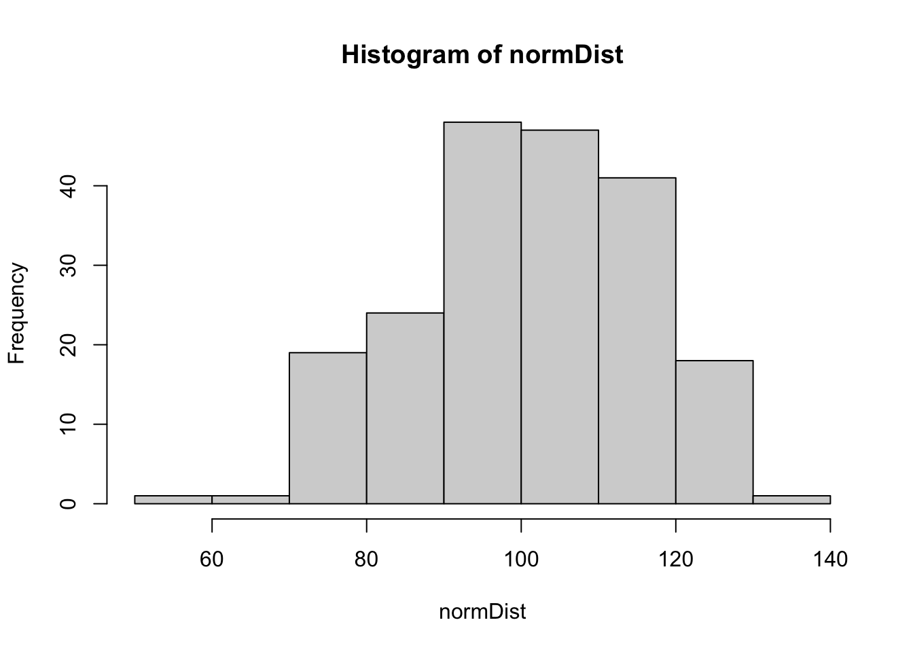
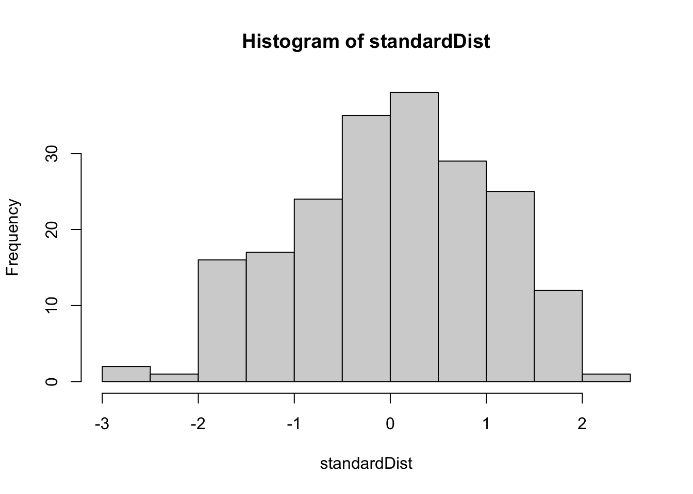
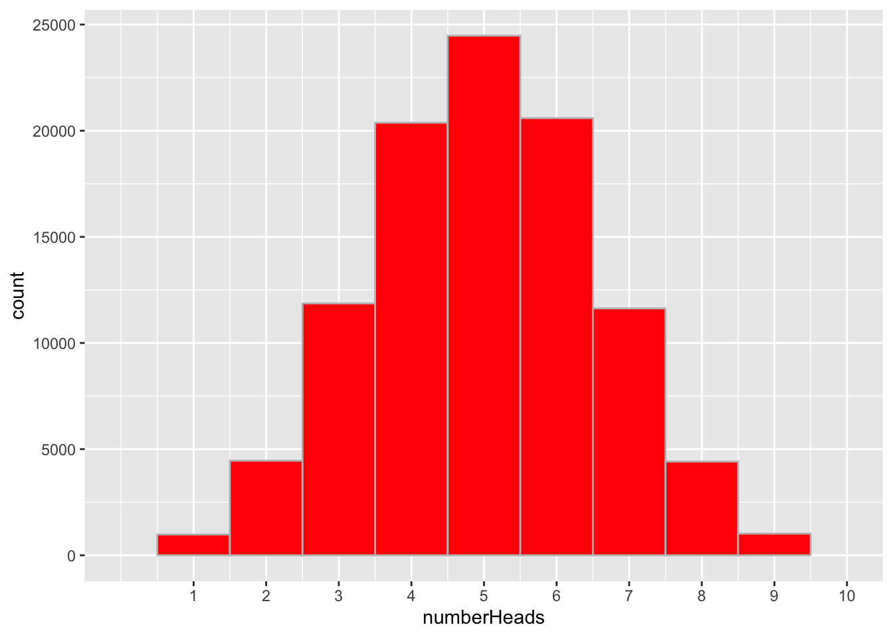

pacman::p_load(tidyverse)16 Building intuitions about probability and NHST
16.1 A few words on where we are at so far…
Last week we introduced the notion of a distribution of data, and highlighted how to assess important characteristics of data distributions. This week, we will discuss sampling distributions, how they differ from population distributions, and perhaps most important for this semester’s focus, the notion of the null sampling distribution, where a key point is the assumption that the that the null sampling distribution approximates the standard distribution, with a mean \(\approx\) 0, and a SD \(\approx\) 1.
We can do wonderful things the standard distribution, including assessing the probability of an obtained value within that distribution. For example, we know that a z-score greater than 1.96 has a p-value of less than .05. Given what you know about tests for significance, you can bet your bottom dollar that this is crucial for us!!
Before jumping to that, however, lets build some intuitions about probability. There are several tools at our disposal for simulating and understanding probability as it relates to the normal and standard distributions in R. First we need to load in our packages:
17 Simulating distributions
For example, we can generate a random, normal distribution, we’ll name it normDist using the rnorm() function:
# setting the seed so our "random" numbers are the same
set.seed(20)
# make 200 observations with mean = 100 & sd = 15
normDist <- rnorm(n = 200, mean = 100, sd = 15)
# make a quick histogram
hist(normDist) 
and we can convert these normDist scores to a standard distribution by submitting them to scale():

We can use pnorm() to assess the cumulative probability of a given score. In other words what is the likelihood of getting that score or lower in our distribution. The pnorm() function defaults to the standard distribution, that is it assumes that you have a mean=0 and sd=1. Taking a look at its input parameters:
pnorm(q, mean, sd, lower.tail) where q is the value in question; mean and sd relate known values of the distribution, and lower.tail is a logical telling you whether you are looking at the cumulative probability (TRUE) or looking at the upper tail (FALSE). For example, run each line separately and see the output.
# 1. prob of z score of 1.96 or less
pnorm(q = 1.96)[1] 0.9750021# 2. prob of z score of 1.96 or greater
pnorm(q = 1.96, lower.tail = FALSE)[1] 0.0249979One important consideration is whether your value is greater or less than the mean. For example, with the standard distribution, you are asking if q>0 or if q<0. If q>0 then everything above holds. If q<0 then the reverse holds (essentially, what constitutes the upper and lower tail is switched):
# 1. prob of z score of -1.96 or less (further from zero)
pnorm(q = -1.96)[1] 0.0249979# 2. prob of z score of -1.96 or greater (closer to zero)
pnorm(q = -1.96, lower.tail = FALSE)[1] 0.9750021We can also do this with raw scores in an assumed normal distribution. Here we simply change the default values of the pnorm() parameters. For example assessing the likelihood scores of 130 and 80 assuming mean=100 and sd=15:
# 130 or less
pnorm(q = 130,mean = 100,sd = 15)[1] 0.9772499# 130 or greater
pnorm(q = 130,mean = 100,sd = 15, lower.tail = FALSE)[1] 0.02275013# 80 or greater
pnorm(q = 80,mean = 100,sd = 15, lower.tail = FALSE)[1] 0.9087888# 80 or less
pnorm(q = 80,mean = 100,sd = 15)[1] 0.09121122We can take advantage of the Rule of subtraction to assess the likelihood of getting a score between 120 and 130.
library(tidyverse) # using the pipe operator %>%
# probability of 130 of less MINUS probability of 120 or less
(pnorm(q = 130,mean = 100,sd = 15) - pnorm(q = 120,mean = 100,sd = 15)) %>% abs()[1] 0.06846109# note abs() just gives me the absolute valueBecause we typically deal with cumulative probabilities, pnorm() is the major player here (along with rnorm() to generate simulated data). It’s much rarer that you’ve be asked to give the exact probability of a score. For example the probability of having a score exactly 130. That said, if the need arises this can be accomplished in R using dnorm():
# 130 exactly given a mean of 100 and sd of 15
dnorm(x = 130, mean = 100, sd = 15)[1] 0.003599398# a z-score of exactly 1
dnorm(x = 1)[1] 0.2419707Note that dnorm() takes vectors of scores. In fact this is how we generated our approximate normal curve to overlay our histograms last week!
Finally, qnorm() can be used to ask the reverse of pnorm(). What score has a cumulative probability of p given the mean and sd? For example:
qnorm(p = 0.9750021, mean = 0, sd = 1)[1] 1.9617.1 Thinking about probability and assumptions of our data.
This week, we unpack probability and how it directly factors into our assessments on important aspects of our data. This will lead into our future discussions regarding statistics tests and inference making.
For the next few weeks, these two critical assumptions about the nature of our observed data will be paramount:
- that the data (its distribution) is randomly obtained from a normal population.
- that our measures of the data (including both the tools we use to get our measures and the resulting descriptions of the data) are independent of one another.
We’ve spent some time at length with Assumption #1. What do I mean in Assumption #2? Here’s an example that I use in my Perception course:
Say I step on a scale and it says that I’m 180 lbs. I then walk over to a stadiometer and get my height measured and it tells me I’m 71 inches tall. Right after this I return to the original scale. If the measurement of my weight and height were independent of one another, then the scale should again read 180 lbs. However, if in some stange reality, the act of measuring my height somehow changes the measurement of my weight, then all bets are off—the second time on the scale it could say I’m 250 lbs, 85 lbs, who knows.
One of the lessons of quantum mechanics (see Stern-Gerlach experiments is that we do live in that strange reality—at least at the quantum level. Most of you have probably encountered the uncertainty principle which is a physical manifestation of this issue. More pertinent for us consider the example in class:
We have a theory that adults with children are more likely to wear seatbelts than adults without children. Our null hypothesis is that adults with children are no more likely to wear seatbelts than adults without children.
Here, everyone is being measured in two ways, 1. the seatbelt measurement (do you wear a seatbelt, yes or no?) and 2. the parenthood measurement (do you have a child, yes or no?). If the two measures are independent of one another, then the seatbelt measurement should not have an effect on the parenthood measurement and vice versa. If they do, then the measures are not independent of one another. Of course, in this case, it doesn’t mean that the being measured for seatbelt-wearing may instantaneously turn you into a parent (YIKES!!!), but it does mean that being identified as a parent may increase the probability that you are a seatbelt wearer and vice versa.
Hopefully from this example, you now see the relationship between the null and research (alternative) hypotheses—the research hypothesis is structured in such a way that it assumes a violation of the null, in this case a violation of the independence assumption. In many cases we will be testing whether the evidence supports such a violation. What’s critical is that this assumption is not already violated in our null hypothesis. That is, if the null hypothesis is based on a relationship that is assumed to be independent, but in reality is not, then any measures we take run the risk of being confounded
So returning to why probability is so important, the probabilities related to the null distribution have been worked out by women and men far smarter than I. THESE PROBABILITIES ARE KNOWN and tell us the likelihood that our null assumptions have not been violated given our present set of data.
17.2 Okay on to this week’s example analyses:
For the following examples, we will be using functions that come pre-installed in R (base library) as well as the tidyverse. Let’s go ahead and install the tidyverse.
pacman::p_load(tidyverse)17.3 Classic example: The coin flip
While we are primarily dealing with continuous data, I find that intuitions about probability are best made using examples from discrete outcomes (see Cohen Chapter 19 if you want to look ahead at the Binomial Distribution; if not we’ll get there at the end of the semester). The classical examples are rolling die and flipping a coin. So..
Let’s make a wager. I’ll let you flip a single coin 10 times, and if you get 6 or more heads I’ll give you $250. If not, you have to give me $250. Should you take this bet? To answer this question you’ll want to assess the likelihood of getting an observed outcome, in this case \(Heads \geq 6\), provided a sample size (10).
We assume that the likelihood of getting Heads on any single flip is .5, (assuming that the coin is far and not a cheat). We also assume that the coin flips are independent of one another, that is any single flip does not influence or change the likelihood of an outcome on subsequent flips. In light of our discussion in the opening section, I hope you see that depending on the outcome, it may cause us to re-evaluation these assumptions.
For now, let’s assume that both are indeed true and that I’m not a cheat.
17.3.1 How many heads would we get if we flipped a fair coin 10 times?
In class we noted that with a known sample space and a known sample size we can calculate the expected outcome. In this case our sample space is {Heads, Tails} and our sample size is 10 (flips). The probability of observing a Heads in our sample space is .5. Therefore:
\[expected\ Heads = p(Heads) \times N(flips)\\ expected\ Heads = .5 \times 10 = 5\]
Of course, reality does not often abide our expectations, and given what we know about sampling error you’re more likely to not get exactly 5 flips than you are. So, what we’re really interested in is what is the likelihood of our expectation, and fortunately for us, over the long-run independent/random outcomes can be predicted probabilistically. There are several ways to address this in R.
17.3.1.1 Simulation method
The first method involves running a large number of simulations and assessing the probability based upon the outcomes. To run a single simulation, you can use the rbinom() function. Below I am running a simulation of 1 coin (n), with a sample size of ten flips (size), and a known (or really assumed) probability of .5 (prob).
# set our seeds to get the same numbers:
set.seed(1)
# n = number of coins
# size = number of flips
# prob(ability)
rbinom(n = 1,size = 10,prob = .5) [1] 4In this simulation you got 4 flips and I’m off to cop a new pair of retro Air Jordans with your money… or I suppose if I’m being sensible, you’ve paid for this week’s daycare. In any event, you lost. But we know that not much can be learned about the likelihood of an outcome with a sample size of 1. Let’s try running this scenario using a simulation of 100K coins.
To run this simulation, you modify the rbinom() call:
Let’s plot this using ggplot():
# must convert vector to a data frame
numberHeads_df <- tibble(numberHeads)
p <- ggplot2::ggplot(data = numberHeads_df, aes(x=numberHeads)) +
geom_histogram(binwidth=1,boundary=-0.5,fill="red", col="grey") +
scale_x_continuous(limits=c(0,10), breaks = 1:10)
show(p)Warning: Removed 2 rows containing missing values (`geom_bar()`).
As you can see in the plot above, we get exactly 5 heads a little less than 25K out of 100K, or about 25% of the time. That’s the eyeball test, How might we go about obtaining the exact probabilities from this simulation? We can take advantage of logical statements. Logicals produce outputs that are either TRUE or FALSE. More, and this is terribly useful for us, R also reads those TRUE or FALSE outcomes as 1 or 0 where TRUE=1 and FALSE=0. Take the following vector for example:
[1] TRUE TRUE FALSE FALSE FALSE TRUE FALSE FALSE TRUE FALSER reads this as a numeric:
[1] 1 1 0 0 0 1 0 0 1 0What this means is that you can get info about the number of TRUEs by performing mathematical operations on this vector. For example, above you see that there are 4 TRUEs out of 10 possible. That means that we get TRUE 40% of the time. We can obtain this probability in R using the mean() function. How? Remember that the mean is the sum of scores divided by the number of scores. In this case the sum is 4; the number of scores is 10; and 4/10 is .40.
Returning to our simulation of 100K samples, numberHeads, we can do the following to get the probability of 5 (see Demos, Ch. 3 on logicals for explanation of operators like ==):
mean(numberHeads==5)[1] 0.24477So the probability of getting exactly 5 heads is 0.245.
Returning to our wager, based on our simulation what’s the probability of getting 6 or more heads?
mean(numberHeads>=6)[1] 0.37743About 38%. You probably shouldn’t take my bet.
17.3.1.2 Non-simulation method
Simulations are useful for helping us visualize our scenarios and use pseudo real data to test our underlying assumptions. But most times you just want the answer… in fact often that will suffice because as I mentioned, in most normal circumstances the probabilities have already been worked out. How can we get the results above without simulating 100K coins? By using two functions in R that belong to the same family as rbinom(): dbinom() and pbinom().
dbinom() returns the exact probability of an outcome, provided a generated probability density function. It takes in arguments related to the number of successful outcomes (x), the sample size (size) and the independent probability of a successful outcome (prob).
So the probability of 5 Heads (successes) on 10 flips with a fair coin would be entered:
dbinom(x = 5,size = 10,prob = .5)[1] 0.2460938We see that this value is pretty close to our simulated outcome, confirming that the simulation was indeed correct, if not entirely necessary.
We can also use this function to build a table for the individual probabilities of all possible outcomes. To see how, first lets consider the space of possible outcomes in this scenario. At one extreme, I could flip a coin 10 times and get no Heads. At the other I could get all Heads. So the set of possible outcomes can be express as a sequence from 0 to 10. Recall that you can create such a sequence using the : operator:
0:10 [1] 0 1 2 3 4 5 6 7 8 9 10With this in mind you can modify the previous code like so:
dbinom(x = 0:10,size = 10,prob = .5) [1] 0.0009765625 0.0097656250 0.0439453125 0.1171875000 0.2050781250
[6] 0.2460937500 0.2050781250 0.1171875000 0.0439453125 0.0097656250
[11] 0.0009765625The output gives be the resulting probabilities in order from 0 Heads to 10 Heads.
Let’s create a table to make this easier to digest. First I’m going to create a vector of numberHeads to show all possibilities from 0 to 10. Second, I will run dbinom() as above to test each possibility, saving that to a vector probHead. Finally I will combine the two into a data frame called probTable:
# 1. range of possibilities
numberHeads <- 0:10
# 2. prob of outcome
probHead <- dbinom(x = numberHeads,size = 10,prob = .5)
# 3. combine to data frame
probTable <- tibble(numberHeads,probHead)
# 4. Show the data frame (table)
show(probTable)# A tibble: 11 × 2
numberHeads probHead
<int> <dbl>
1 0 0.000977
2 1 0.00977
3 2 0.0439
4 3 0.117
5 4 0.205
6 5 0.246
7 6 0.205
8 7 0.117
9 8 0.0439
10 9 0.00977
11 10 0.000977Congrats you’ve just created a Binomial Distribution Probability Table for this scenario. We’re a bit ahead of the game here as we deal with the Binomial Distribution at the end of the semester, but the general intuitions hold regarding the Normal Distribution as well.
Returning to our wager of 6 or more heads, we would use pbinom(). pbinom() returns probabilities according to the cumulative density function, where the output is the likelihood of obtaining that score or less. Note that pbinom() takes similar arguments to dbinom() but asks for q instead of x. For our purposes q and x are the same thing… number of outcomes.
So for example the probability of obtaining 5 or less Heads provided our scenario may be calculated:
pbinom(q = 5,size = 10,prob = .5)[1] 0.6230469Given what we know about the Compliment Law, we can compute the probability of 6 or more Heads as:
1 - pbinom(q = 5,size = 10,prob = .5)[1] 0.3769531which again matches with our simulation.
17.4 Changing the parameters
So obviously if the coin is a fair coin, your shouldn’t take the bet. Let’s imagine that we kept the same wager, but to entice you to bet, I tell you that this coin lands on Heads 65% of the time? Should you take the bet?
To test this new scenario all you need to do is change the probability parameter. Let’s just skip the simulations and just assess using dbinom() and pbinom().
17.4.1 Constructing a table of outcome probabilities:
As before we’ll use dbinom() to create a table, simply modifying the prob argument to .65:
# 1. range of possibilities
numberHeads <- 0:10
# 2. prob of outcome
probHead <- dbinom(x = numberHeads,size = 10,prob = .65)
# 3. combine to data frame
probTable <- tibble(numberHeads,probHead)
# 4. Show the data frame (table)
show(probTable)# A tibble: 11 × 2
numberHeads probHead
<int> <dbl>
1 0 0.0000276
2 1 0.000512
3 2 0.00428
4 3 0.0212
5 4 0.0689
6 5 0.154
7 6 0.238
8 7 0.252
9 8 0.176
10 9 0.0725
11 10 0.0135 How does this table compare to the one above?
17.4.2 Assessing cummulative probability
And now, to get the probability of 6 or greater:
1 - pbinom(q = 5,size = 10,prob = .65)[1] 0.7514955Ahhh… the odds are ever so slightly in your favor.
What if we changed the bet: you get 60 Heads out of 100 flips?
1 - pbinom(q = 60,size = 100,prob = .65)[1] 0.827585Yea, you should really take that bet! Fortunately for me, I wasn’t born yesterday.
How about 12 out of 20?
1 - pbinom(q = 12,size = 20,prob = .65)[1] 0.6010266Nope, I’m not taking that bet either. Does 3 out of 5 interest you?
1 - pbinom(q = 3,size = 5,prob = .65)[1] 0.42841517.5 Catching a cheat
OK. Last scenario. Let’s imagine that I am not a total sucker, and we reach a compromise on “30 or more Heads out of 50 flips”. You run to your computer and calculate your odds and like your chances (maybe I am a sucker)!
1-pbinom(q = 30,size = 50,prob = .65)[1] 0.7264363You flip 50 times but only get 27 heads. Astounded, because those odds really were in your favor, you label me a liar and a thief. Are you justified in doing so? This scenario essentially captures our discussion at the outset, how far of a deviation warrants us being skeptical that our original assumptions were true. In this case the original assumptions were that 1. each coin flip is independent and 2. the independent probability of getting a Heads is 0.65. We typically set our threshold at \(p<.05\), which remember for a two tailed test means that we are on the lookout of extreme values with a \(p<.025\).
So essentially we are asking if the probability of obtaining exactly 27 Heads given this scenario is less than 2.5%:
dbinom(x = 27,size = 50,prob = .65)[1] 0.03132011You Madam/Sir have besmirched my honor!
OK, well is 27 isn’t enough, then how low (or high) do you need to go to pass the critical threshold? To answer this we need to construct a table of probabilities:
# 1. range of possibilities
numberHeads <- 0:50
# 2. prob of outcome
probHead <- dbinom(x = numberHeads,size = 50,prob = .65)
# 3. combine to data frame
probTable <- tibble(numberHeads,probHead)
# 4. Show the data frame (table)
show(probTable)# A tibble: 51 × 2
numberHeads probHead
<int> <dbl>
1 0 1.60e-23
2 1 1.48e-21
3 2 6.75e-20
4 3 2.01e-18
5 4 4.38e-17
6 5 7.48e-16
7 6 1.04e-14
8 7 1.22e-13
9 8 1.21e-12
10 9 1.05e-11
# ℹ 41 more rowsOne could visually inspect the entire table noting which outcomes have a corresponding probability less than .025. But the whole point of learning R is to let it do the heavy lift for you. In this case you can ask R:
“Hey, R. Which outcomes in have a probability less than .025”
or more exactly:
“Which rows in my data frame have a
probHeadless than .025”
This is accomplished using the which() function:
which(probTable$probHead<0.025) [1] 1 2 3 4 5 6 7 8 9 10 11 12 13 14 15 16 17 18 19 20 21 22 23 24 25
[26] 26 27 40 41 42 43 44 45 46 47 48 49 50 51This gives us indices of all of the rows that meet this criteria. BUT KEEP IN MIND, our list of possible outcomes started at 0 not 1. But there’s no such thing in R as row 0 (now Python on the other hand…). That means in the output above that 1 actually refers to 0 Heads, 2 to 1 Head and so on. You could stop here and just know that you need to subtract the above output by 1 to get the correct result. Or you could address this in R in the following ways:
First, the quick/dirty/limited/bad way. Keep in mind this only works because we know that we can apply a subtraction rule:
which(probTable$probHead<0.025)-1 [1] 0 1 2 3 4 5 6 7 8 9 10 11 12 13 14 15 16 17 18 19 20 21 22 23 24
[26] 25 26 39 40 41 42 43 44 45 46 47 48 49 50The correct below way will work for cases in which adjusting the index is unknown. Recall from Winter Chapter 2 that you can get a specific value from a vector or data frame by using its index using the [] operator such that [row,column]. Think of this like how you would get a certain cell in Excel.
For example the get the 17th row of our data frame probTable:
probTable[17,]# A tibble: 1 × 2
numberHeads probHead
<int> <dbl>
1 16 0.00000157Note that if you want all rows or columns, you leave that index blank (as I did above where I wanted both columns). Keeping in mind that which(probTable$probHead<.025) gave us a vector of indicies, we can rewrite the previous chunk like so to get the important rows in a data frame structure:
crticalValues <- which(probTable$probHead<.025)
probTable[crticalValues,]# A tibble: 39 × 2
numberHeads probHead
<int> <dbl>
1 0 1.60e-23
2 1 1.48e-21
3 2 6.75e-20
4 3 2.01e-18
5 4 4.38e-17
6 5 7.48e-16
7 6 1.04e-14
8 7 1.22e-13
9 8 1.21e-12
10 9 1.05e-11
# ℹ 29 more rowsAgain this would ask us to look through the whole table, but we can apply the same logic to just show us the corresponding numberHeads as a vector (Remember that you’ll need to specify the data frame when referring to the columns):
crticalValues <- which(probTable$probHead<.025)
probTable$numberHeads[crticalValues] [1] 0 1 2 3 4 5 6 7 8 9 10 11 12 13 14 15 16 17 18 19 20 21 22 23 24
[26] 25 26 39 40 41 42 43 44 45 46 47 48 49 50Note that since vectors don’t properly have rows or columns, you just use a single value in the [ ].
So, if you got 1 less head, then you can call me a cheat. Conversely if you managed to get 39 heads or above, I might have reason to believe that you are somehow gaming me.